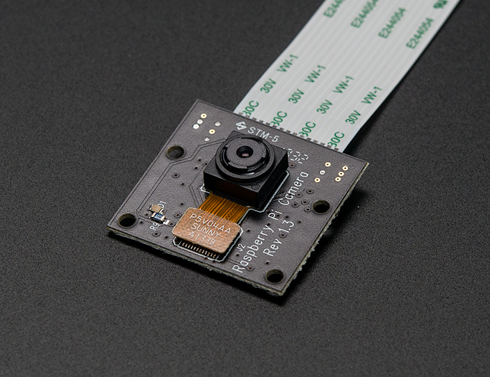

Múlt héten jött a hír, hogy rendelhető a Raspberry Pi-hez készített infravörös filter nélküli kamera a Pi NoIR.

Azonnal rendeltem is egyet, majd írtam egy kommentet a HUP-ra, hogy én mire használom a kamera modult. trey-nek megtetszett, amit írtam, és írt is egy bejegyzést az ételdobozból és Raspberry Pi-ból készített time-lapse kamerámról.
Ennek eredményeképpen több megkeresést kaptam, hogy mennyibe kerül egy ilyen hordozható time-lapse kamerát összeállítani, illetve milyen szoftvereket használok, ezt próbálom most összefoglalni.
Szeretném megjegyezni, hogy az eddig elkészült felvételek még nincsenek kész, nincsenek megvágva, nincs rajtuk javítás stb. A cél egy hosszabb videó, vagy klip vagy ilyesmi készítése, és még nagyon az elején járok a dolognak.
Miből áll és mennyibe kerül?
A legegyszerűbb, ha felsorolom az alkatrészeket. (Az árak mellett feltüntettem, hogy milyen pénznemben értendők, mert pár dolgot külföldről rendeltem.)
- Raspberry Pi Model B (rev2): 35 USD – Napi árfolyam kérdése, hogy Forintban mennyi.
- Raspberry Pi Camera Board: 16.56 GBP – Napi árfolyam kérdése, hogy Forintban mennyi.
- Wi-Fi USB adapter: ~2000–4000 HUF – Nagyon fontos, hogy elég legyen neki az az áram, amit az RPi közvetlenül le tud adni, különben powered hubot kellene használni.
- SD kártya: ~5000+ HUF – Legalább 16 GB-os, class 10-es SD kártyát ajánlok, mert egy-egy fotózás alkalmával simán összejön 4–5 GB fotó.
- 2 db 4-es AA elemtartó: ~150 HUF – Bármelyik elektronikai üzletben kapható.
- kapcsoló: ~25 HUF – Nem emlékszem, hogy mennyibe került, 100 HUF alatt van az biztos.
- 8 db 2500 mAh-ás 1,2 V-os NiMH akkumulátor: ~4000–8000 HUF – Az ár a márkától függ, nekem eléggé noname van. :)
- ételdoboz: ~1000 HUF – Fontos, hogy légmentesen zárható legyen, így eső esetén nem folyik be a víz, a köd nem okoz gondot stb.
- matt akrilfesték spray (fekete és fehér): ~2000 HUF – Az ételdoboz belülről feketére, kívülről fehérre van fújva. Belül fekete, hogy a különböző ledek fényét, villogását elnyelje nehogy becsillanjon a kamerába. Kívülről azért fehér, hogy visszaverje a fényt a melegedést elkerülendő.
- UV szűrő: használtan ~500–1200 HUF
- csavarok, alátétek: ~100 HUF
- fényképezőgép állvány: Ehhez inkább nem írok árat (nekem korábbról volt már egy). Viszont nagyon fontos, hogy ha állvánnyal dolgozom, akkor legyen az állványon alul valami kampó, vagy más, hogy súly lehessen akasztani az aljára. Ugyanis az ételdoboz nagyobb, mint egy átlagos fényképezőgép, és a súlya még elemmel együtt is kicsi, ezért könnyen belekap a szél.
- egyebek: maszkolószalag, szigetelőszalag, drót, forrasztópáka, forrasztóón, fenyőléc, laminált padlódarab. Utóbbi rögzíti a dobozt az állványra; úgy „faragtam”, hogy az állvány fejébe illeszkedjen. Ezek mind voltak itthon, árat nem tudok mondani.
Végösszeg: 28284 HUF (mindenből a legolcsóbbal és a mai USD és GBP árfolyammal számoltam).
Ebben nincs benne a fényképezőgép állvány, az itthon talált felhasznált anyagok, alkatrészek, sem az a készíttetett gyűrű, amelybe az UV szűrő illeszkedik. Nem gondoltam volna, hogy ennyit költöttem rá. Sőt, nekem 32 GB-os SD kártyám van, és nem is mindenből a legolcsóbb cucc, ráadásul több kamera modulom is van (NOiR is)… Szóval én valahol 50 ezer felett járok.
Szoftver
A legutóbb ennyit írtam a szoftverről:
A fényképezés mobiltelefonról vezérelhető:
- A Pi egy USB-s WiFi modul
hostapdésisc-dhcp-serversegítségével szolgáltat hálózatot.- Egy SSH klienssel be lehet jelentkezni a Pi-re.
- Egy egyszerű shell script a
raspistillalkalmazással preview képet készít, amitnetcat-tal browserbe továbbítva lehet megtekinteni.- Szintén egy shell scripttel lehet elindítani a fényképezést (5000 ms timeout).
Most ezt megpróbálom kicsit jobban kifejteni.
Az RPi-n „gyári” Raspbian fut, a fényképezéshez pedig a raspistill programot használom. Az SSH szerver szintén a „gyári”, a hostapd és az isc-dhcp-server konfigurációját pedig egyszerűen innen puskáztam:
- Using your Raspberry Pi as a Wireless Router and Web Server | DaveConroy.com
- Turn Your Raspberry Pi Into a WiFi Hotspot with Edimax Nano USB EW-7811Un (RTL8188CUS chipset) | DaveConroy.com
A használt scriptek pedig letölthetők:
Nincs bennük semmi magic. A fényképezésre külön scriptek vannak (capture-*.sh), amelyekben csak a két kép közötti timeout az eltérő. Preview-t pedig a preview.sh scripttel lehet készíteni. Ez utóbbi ahhoz kell, hogy a fényképezés elindítása előtt rendesen be lehessen állítani az állványt és a kamerát.
Képek feldolgozása
A képek bizgetéséhez ImageMagick-et használok. Itt egy szokásos, csak croppoláshoz és átméretezéshez használt parancs, ami végigmegy a megadott könyvtárban található összes jpg fájlon:
-path /media/szantaii/Tibor/capture/cap1_processed/ /media/szantaii/Tibor/capture/cap1/*.jpg
Egy másik paraméterezéssel már a színeket is állítgattam (ennek az eredménye látható a poszt végén):
-crop 2592x1458+0+243 +repage -resize 1920x -format png \
-path /media/szantaii/Tibor/capture/cap28_processed_enhanced/ /media/szantaii/Tibor/cap28/*.jpg
Az utolsó példában pedig egy 1,6 fokos forgatás, vágás és átméretezés van:
-crop 2446x1376+54+176 +repage -resize 1920x -format png \
-path /media/szantaii/Tibor/capture/cap30_processed/ /media/szantaii/Tibor/capture/cap30/*.jpg
A felsoroltakon kívül még az ImageMagick -sigmoidal-contrast operátorával „játszottam”.
Az eddigi parancsokkal csak a képeket dolgoztam fel. A képekből a videót pedig FFmpeg-gel fűzöm össze. A végeredményt 30 és 60 fps-be is ki szoktam renderelni, hogy lássam melyik néz ki jobban. A 30 és a 60 fps generálása között csak annyi a különbség, hogy az FFmpeg-nek meg kell adni, hogyan értelmezze a bemenetként szolgáló képeket, vagyis az -r kapcsoló után 30-at vagy 60-at kell írni.
Hirtelen (az elmúlt másfél órában) ennyi jutott eszembe.